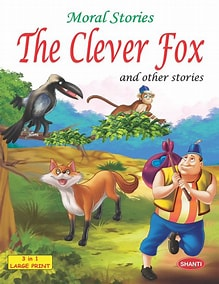
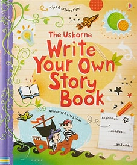
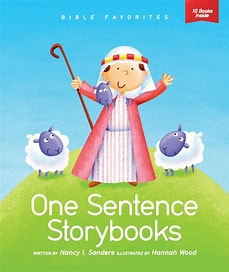
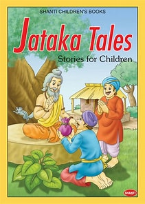

MY BOOKSTORE
Home
Story
About
Contact
Welcome to My BookStore
Find your next favourite book today
Featured Books

Book Title 1
Author Name
$19.99

Book Title 1
Author Name
$29.99

Book Title 1
Author Name
$34.99

Book Title 1
Author Name
$166